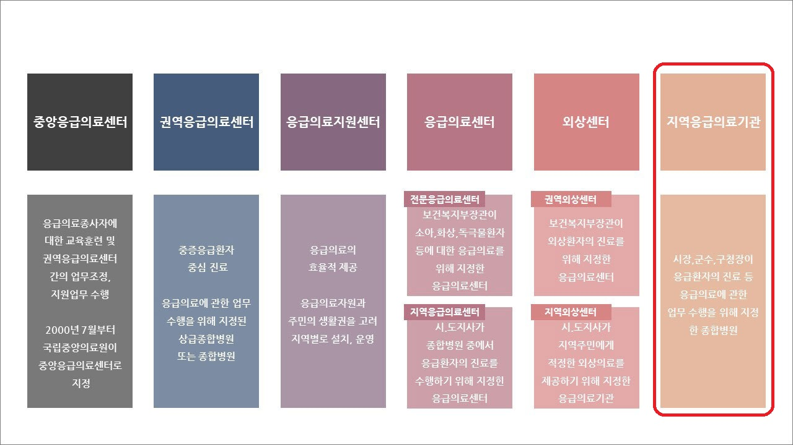

"Local Emergency Medical Institution" in Gyeonggi-do

The Local Emergency Medical Institution is located at the sixth in the picture.
It is a general hospital designated by the Mayor and the head of the Gu to perform tasks related to emergency medical care,
such as medical treatment for emergency patients.